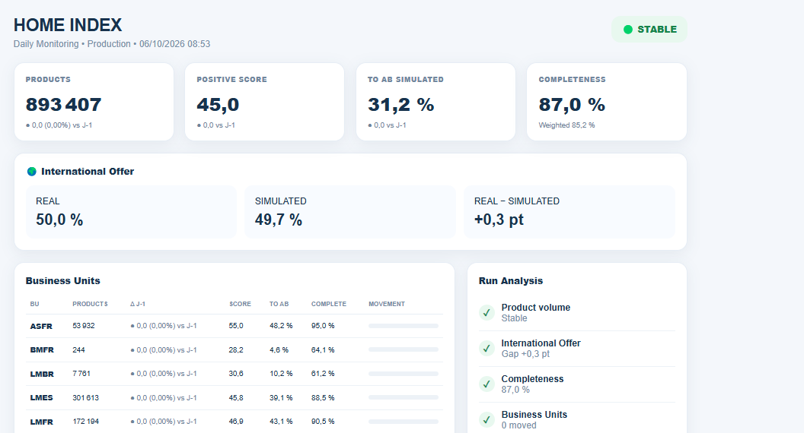

Structure the flow
Clarify request tracking, prioritisation and action traceability in ticketing tools and team documentation.
How to structure support, make data issues easier to investigate and improve resolution time in a cross-functional data environment.

In a multi-entity application and data environment, support teams handle varied requests, investigate data anomalies and coordinate multiple stakeholders. Traceability, prioritisation and repeatable analysis are key challenges.
Clarify request tracking, prioritisation and action traceability in ticketing tools and team documentation.
Use available evidence, logs and SQL/BigQuery queries to analyse discrepancies and guide diagnosis to the right team.
Document procedures, checks and useful information to reduce repeated investigations.
Track handled volume, resolution times and data-quality signals to make progress visible.
The shared operational review also reports 241 project requests handled and additional support-team training.
These indicators come from operational notes shared to prepare this portfolio. Exact scope, comparison dates and calculation methods should be verified before external use. No internal product names, identifiers, data schemas or proprietary information are reproduced here.
The ability to connect operational ownership with technical investigation: not only closing a ticket, but improving how a team understands, tracks and handles recurring issues.